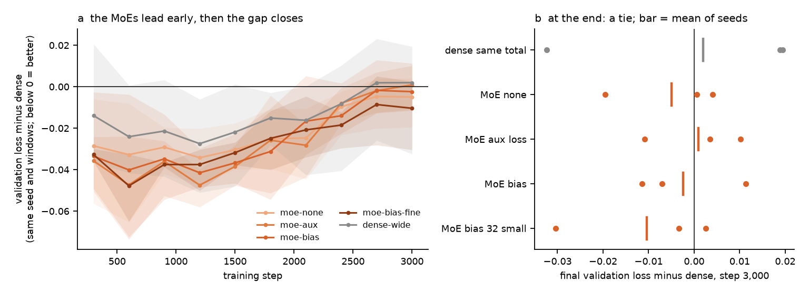
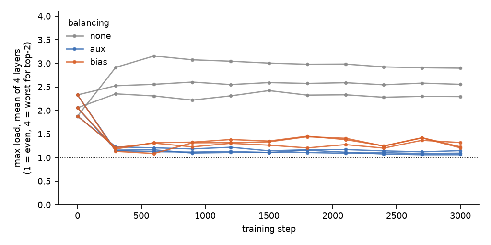
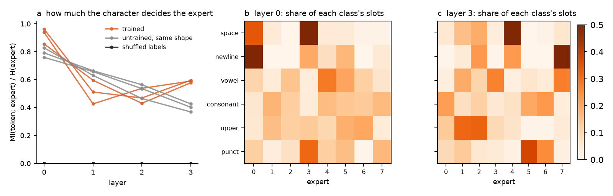
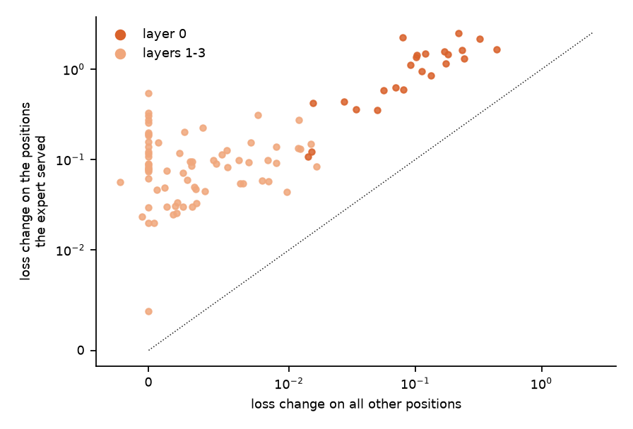
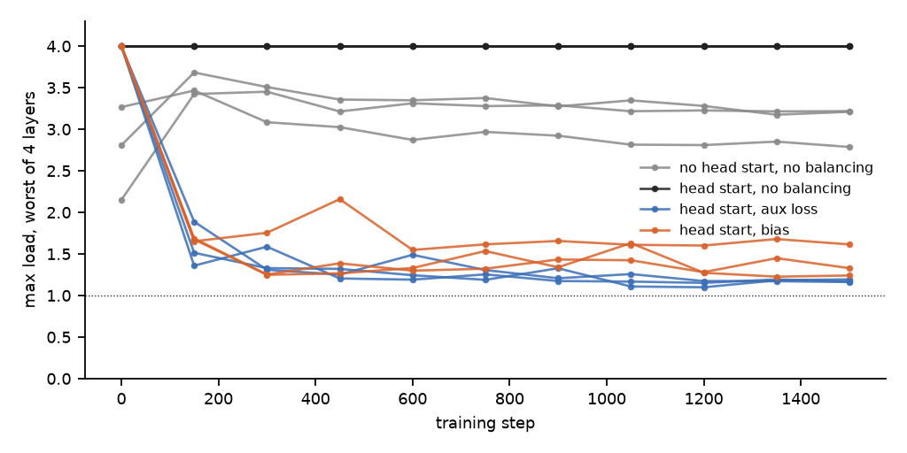

← Research·Model architecture · Episode 5·Experiments·
Does a tiny Mixture-of-Experts beat a dense model doing the same work? Early in training, until the data runs out
For people learning how Mixture-of-Experts models work, and for anyone who reads routing as evidence of what a model does. We built a small DeepSeek-style MoE from scratch (latent attention, 8 routed experts, top-2, one shared expert, three ways to balance the router), trained it beside dense models on Tiny Shakespeare, and asked two questions: does it beat a dense model doing the same work per token, and do its experts really divide the work?
make_cover.py from results/.Summary: the short answer and the key results
In short
Does a small Mixture-of-Experts model beat a dense model that does the same work per token?
Early in training, yes; by the end, no. Paired with the dense model on the same seed and validation text, every MoE variant was ahead at every evaluation from step 300 to 1,800 in all 3 seeds, by 0.025 to 0.048 nats per character on average: it learns faster per step at the same work per token. As the 1 MB corpus repeats, the gap closes: at step 3,000 the MoE balanced the DeepSeek-V3 way ends -0.002 ± 0.012, a tie, and a dense model with the MoE's total weights ends +0.002 ± 0.030. The experts divide the work: the router sorts characters by kind (spaces, newlines, capitals, punctuation), and switching one expert off raises the loss on the characters it served 10 times more than on the rest (96 of 96 ablations). Both balancers keep the load even at no cost in loss; without one, experts go idle.
Key results
| What we tested | Result | Compared with |
|---|---|---|
| Does the MoE beat a dense model doing the same work per token? | Yes while the text is fresh, then a tie. Every MoE variant ahead at every eval from step 300 to 1,800 in all 3 seeds (0.025 to 0.048 on average). At step 3,000, MoE (bias) minus dense: -0.002 ± 0.012 | Dense with the MoE's total weights (2.4× the work): ahead by less, 0.014 to 0.027 over the same steps; +0.002 ± 0.030 at the end |
| What do the extra stored weights do at a larger size? | They overfit like their total size. At 8.3M active / 18.9M stored, best losses tie (1.49-1.51), but by step 3,000 the balanced MoEs end at 2.24-2.33 | Dense, same active: 1.78. Dense, same total: 2.26-2.29 |
| Do the balancers spread the load? | Yes, at no cost in loss. Max load: aux 1.10 / 1.06 / 1.15, bias 1.21 / 1.23 / 1.32 | No balancing: 2.55 / 2.29 / 2.90, with 5 / 4 / 4 idle experts across 4 layers |
| Do experts divide the work? | Yes. Switching one routed expert off raises the loss on its own positions by +0.358, on the rest by +0.035 (10×; 96 of 96 ablations) | The shared expert, which every token uses: +0.619 in layer 0, +0.044 in later layers |
| Does the character decide the expert? | Largely, and partly before training. Specialisation by layer: 0.92, 0.51, 0.48, 0.59 | Untrained router of the same shape: 0.79, 0.65, 0.52, 0.40; shuffled labels ≤ 0.001 |
Validation loss: mean next-character cross-entropy (nats) on 40 fixed batches of 32 windows of 128 characters from the held-out 10%; lower is better, and guessing scores ln 65 = 4.17. Max load: the busiest expert's share of routing slots times the number of experts (1.0 = even, 4.0 = the worst top-2 allows). 3 seeds (0, 1, 2) for every course run: mean ± standard deviation over seeds, and differences paired by seed (the same batches and validation windows).
01Introduction
Feed a page of Shakespeare to the trained model and watch its first layer: 50% of the space characters' routing slots go to expert 3, and 50% of the newlines' to expert 0 (with two experts per token, 50% is the most one expert can take). Switch expert 3 off and the loss on the characters it served jumps by 1.65 nats, against 0.44 on the rest. The experts have divided the work. And for most of training the MoE was ahead of a dense model doing the same work per token, until the text ran out.
What is known. At scale, MoE models reach a dense model's quality with a fraction of its compute per token: the Switch Transformer reports the same quality several times faster, and OLMoE shows open, fully documented MoEs whose experts specialise by token and by domain. Routers need balancing, by an auxiliary loss (Switch) or, in DeepSeek-V3, by a bias that only steers the choice.
What is missing. A version small enough to build and read in a day, where each piece can be switched off and checked against a dense model doing the same work per token; and controls for the routing statistics people quote as evidence of specialisation: what an untrained router of the same shape already does, and what breaks when an expert is removed.
What this note does. It builds build-a-moe-transformer, a 17-stage course with tests that ends in a DeepSeek-style MoE, and nanomoe-transformer, the same model in one file, and measures them. Contributions:
- An open, tested, CPU-sized DeepSeek-style MoE, with every part (router, dispatch, capacity, both balancers, shared and fine-grained experts, MLA, multi-token prediction) in its own tested stage.
- A measurement with both fair baselines: at the same active parameters and at the same total parameters, on three seeds, with paired differences.
- Routing statistics with two controls (shuffled labels and an untrained model) and a causal test (single-expert ablation), and a collapse detector checked on a router forced to collapse.
02Setup
The model. A character-level decoder in the shape of nanoGPT: 4 layers of width 128, context 128, RMSNorm, and Multi-head Latent Attention with decoupled RoPE (it caches a 32-number latent plus a 16-number position key per token instead of 256 numbers). In every layer the feed-forward network is an MoE:
probs = softmax(W x) # 8 scores, one per routed expert
chosen = top-2 of (probs + bias) # bias: DeepSeek-V3 balancing, steers the choice only
weights = probs[chosen] / sum # the bias never enters the weights
moe(x) = shared(x) + Σ weights · expert(x) # every expert: down(silu(gate x) * up x), hidden 128
after each step: bias_i += 0.01 · sign(mean load − load_i)| Model | Feed-forward layer | Stored | Active | Role |
|---|---|---|---|---|
dense | one SwiGLU, hidden 384 = (2 routed + 1 shared) × 128 | 828,928 | 828,928 | Baseline: same work per token |
dense-wide | one SwiGLU, hidden 1,152 = (8 + 1) × 128 | 2,008,576 | 2,008,576 | Baseline: same stored weights, 2.4× the work |
moe-none | 8 routed + 1 shared, top-2, no balancing | 2,012,672 | 833,024 | Ablation: balancing |
moe-aux | same, Switch-style auxiliary loss (coefficient 0.01) | 2,012,672 | 833,024 | Balancing method 1 |
moe-bias | same, auxiliary-loss-free bias (rate 0.01) | 2,012,672 | 833,024 | The model |
moe-bias-fine | 32 routed of hidden 32, top-8, 4 shared of 32 (DeepSeekMoE's fine-grained split) | 2,024,960 | 845,312 | Variant: fine-grained experts |
The MoE's active count includes its router (1,024 weights per layer), which the dense model lacks: 0.5% more. Training: AdamW (learning rate 3e-3, warm-up then cosine), batch 32 × 128 characters, 3,000 steps, the same seed, batches and validation windows for every variant.
Terms. Max load: the busiest expert's share of the 2 × N routing slots, times 8. Dead expert: one that gets under a tenth of its fair share. Specialisation: the mutual information between a token's character and its top expert, divided by the entropy of the expert (0 = the router ignores the character; 1 = the character alone decides). Own tokens of an expert: the validation positions whose top-2 included it.
What counts as success, set before the runs:
- The MoE beats
denseby more than the spread between seeds (it uses its extra weights). - Both balancers bring max load near 1 without costing validation loss against
moe-none. - Routing depends on the character more than in an untrained router and far more than with shuffled labels; and switching an expert off hurts its own tokens more than the rest (the specialisation is used, not just present).
03How the study was run
- Build the course: 17 stages, each a command with CPU tests that run in seconds (22 tests, under a minute in all); the staged solutions are generated from the last one and checked in CI.
- Fix the run script (
run_all.sh) before any run: per seed, the six variants (3,000 steps each, the dense baseline among them), routing statistics and ablations onmoe-bias, routing statistics onmoe-none, the collapse test (four runs of 1,500 steps) and multi-token prediction (two runs of 3,000 steps). - Run seeds 0, 1 and 2 in parallel on 8-vCPU cloud containers (4 threads each). Seed 0 finished first; we read it and then wrote the predictions in section 07 before seeds 1 and 2 finished.
- Run the one-file model larger (6 layers, width 384, 8.3M active, 18.9M stored, context 256, dropout 0.2) on an H100, seeds 1337 and 1, 3,000 steps, the same six variants.
- Draw the figures from
results/withmake_figures.py, which prints every number it plots.
| Fixed before any run | Changed after reading results |
|---|---|
| Model sizes, the six variants, learning rate, steps, balancing settings, the collapse head start (3.0), the success tests, the run script | Predictions written after seed 0. The one-file H100 run added dropout 0.2 after a first attempt without it overfit badly (validation loss 4.5); that run is reported only as a larger check. |
Conditions: PyTorch 2.5.1, float32, CPU (4 threads). One 3,000-step run took about 12 minutes for the dense model, 15 for an MoE, 20 for dense-wide and 25 for the fine-grained MoE, whose 32 experts run as 32 small batches in a Python loop.
04Results
4.1 The MoE learns faster, then the data runs out
Every variant and the dense model are scored on the same validation windows at every evaluation, so the difference on one seed is paired and the noise of the windows cancels. From step 300 to step 1,800, every MoE variant was ahead of dense at every evaluation in all 3 seeds (Figure 1a): 0.025 to 0.048 nats per character lower on average, and still 0.003 lower on the worst seed and step. At the same work per token, the MoE learns faster. dense-wide, with the MoE's total weights and 2.4 times its work per token, led by less (0.014 to 0.027).
Then the lead closes. Tiny Shakespeare has 1.1M characters, and 3,000 steps of 32 × 128 characters is about 11 passes over it; every model's best validation loss came between steps 1,500 and 2,700, and every final loss is above its best. At step 3,000 the MoE with bias balancing ends -0.002 ± 0.012 from dense, and no MoE is more than 0.030 from it on any seed (Table 1, Figure 1b). Success test 1 passes while the text is fresh and fails at the end of training. Section 4.2 shows the same squeeze at a larger size, where it turns into overfitting.
| Variant | Final val loss, seeds 0 / 1 / 2 | Mean ± sd | Minus dense (paired) | Best along the run |
|---|---|---|---|---|
dense | 1.512 / 1.525 / 1.550 | 1.529 ± 0.019 | – | 1.506 / 1.513 / 1.516 |
dense-wide | 1.531 / 1.493 / 1.570 | 1.531 ± 0.038 | +0.002 ± 0.030 | 1.498 / 1.476 / 1.526 |
moe-none | 1.513 / 1.529 / 1.531 | 1.524 ± 0.010 | -0.005 ± 0.013 | 1.483 / 1.500 / 1.493 |
moe-aux | 1.516 / 1.536 / 1.539 | 1.530 ± 0.013 | +0.001 ± 0.011 | 1.477 / 1.496 / 1.498 |
moe-bias | 1.524 / 1.518 / 1.539 | 1.527 ± 0.011 | -0.002 ± 0.012 | 1.494 / 1.496 / 1.493 |
moe-bias-fine | 1.509 / 1.528 / 1.520 | 1.519 ± 0.009 | -0.010 ± 0.018 | 1.490 / 1.495 / 1.486 |
Table 1. Final: 40 fixed validation batches at step 3,000. Best: the lowest of 11 evals of 10 batches each along the run (noisier). Parameters in Setup.

dense, paired by seed and validation windows, at every evaluation (10 batches, 41k characters; 40 at step 3,000); line = mean of 3 seeds, band = their range. Every MoE (orange) is below zero from step 300 to 1,800 in every seed; the gap closes as the corpus repeats. (b) The final difference per seed (dots) and its mean (bar): a tie, within 0.030 for every MoE.4.2 At a larger size, the extra stored weights overfit like a model of their total size
A 1 MB corpus runs out quickly. The one-file model at 8.3M active and 18.9M stored parameters (H100, dropout 0.2, two seeds) reached its best validation loss by step 600-900, and there the variants again tie: dense 1.492 / 1.507, MoE with bias 1.493 / 1.514, aux 1.487 / 1.507, none 1.498 / 1.511, fine-grained 1.491 / 1.494, dense-wide 1.497 / 1.513 (seeds 1337 / 1). By step 3,000 they had separated, and not in the MoE's favour: dense ended at 1.776 / 1.777, while the balanced MoEs ended at 2.24-2.33, level with dense-wide (2.26 / 2.29). The MoE memorised like a model of its stored size, not its active size. The MoE with no balancing overfit least of the MoEs (2.11 / 2.16): with its load piled onto a few experts, it is in effect a smaller model.
4.3 Both balancers spread the load, at no cost in loss
Figure 2 follows each router's load through training. Without balancing, the busiest expert in a layer ended at 2.55 / 2.29 / 2.90 times its fair share (mean over the 4 layers; seeds 0 / 1 / 2), and 5 / 4 / 4 experts across the 4 layers got under a tenth of their share. The auxiliary loss held it at 1.10 / 1.06 / 1.15 and the bias at 1.21 / 1.23 / 1.32, both within a few hundred steps. Neither cost loss: final validation loss was 1.513 / 1.529 / 1.531 with no balancing, 1.516 / 1.536 / 1.539 with the aux loss and 1.524 / 1.518 / 1.539 with the bias. Success test 2 passes.
One balancing setting did not carry over. With 32 fine-grained experts and top-8, the same bias rate (0.01) left max load at 2.65 / 2.33 / 2.36: four times as many experts share the same per-step nudges, so the bias needs longer or a larger rate. The one-file model at 8.3M active parameters showed the same (2.38 / 2.42).

Each bar is one routed expert's share of its layer's routing slots on held-out text (seed 0); dashed line = the fair share (1/8); orange = more than twice the fair share.
Interactive figure: drag the slider through training to watch each router spread, or pile up, its load.
4.4 Experts sort characters by kind, partly before any training
Routing depends heavily on the character. Specialisation (how much knowing the character tells you about its top expert, as a share of the expert's entropy) was layer 0: 0.92 trained, 0.79 untrained; layer 1: 0.51 trained, 0.65 untrained; layer 2: 0.48 trained, 0.52 untrained; layer 3: 0.59 trained, 0.40 untrained; shuffling the expert labels across positions gives at most 0.001 (Figure 3a). The class tables show what the dependence looks like: in layer 0 one expert takes 50% of the space characters' slots, another 50% of the newlines', and the last layer gives capitals, punctuation and newlines experts of their own (Figure 3b-c). The most over-represented characters per expert in the last layer of seed 0 read like a typesetter's drawers: vJFbhjYV, :UONCESH, ZRGPKEBV, qeIxouOr, W-cTtw⏎, ?!.;,dyn.
Named side-finding: routing before learning. An untrained router of the same shape already scores 0.79 in layer 0, because at initialisation the residual stream there is little more than the character's embedding, and a random projection of it is a fixed, character-keyed assignment. Training added +0.13 in layer 0 and +0.19 in the last layer, and in the middle layers the trained routers depend on the character no more than untrained ones (0.51 against 0.65, 0.48 against 0.52). A specialisation number without this baseline overstates what training did. In the larger one-file model the untrained baseline falls to 0.06-0.10 in deep layers, so there the trained routers' 0.52-0.62 is clearly learned.

4.5 Switching an expert off hurts the characters it served
Routing statistics show that routing depends on the character, not that the split matters. To test use, we switched off one routed expert at a time (its contribution removed, the other weights left as they were) and measured the loss on the same held-out windows, split into the positions whose top-2 included that expert and the rest. In 96 of 96 ablations (3 seeds × 4 layers × 8 experts), the expert's own positions lost more: on average +0.358 nats against +0.035 on the rest, 10 times as much (Figure 4). Named side-finding: targeted damage. The rest are not untouched, because later positions read the damaged ones through attention.
The first layer carries the most. Switching off one routed expert there cost +0.367 overall, against +0.029 in later layers; switching off the shared expert cost +0.619 in layer 0 and +0.044 in later layers. Success test 3 passes on the ablation half; on the specialisation half it passes only in the first and last layers.

4.6 An unbalanced router leaves experts idle, and a head start never fades on its own
A collapse detector needs only the counts the MoE layer already keeps. Ours flags a layer when the load's entropy falls under 0.75 of its maximum, the max load passes 2.0, or an expert gets under a tenth of its share; on made-up counts [25, 25, 25, 25] it says ok, and on [97, 1, 1, 1] it raises all three flags. To watch collapse and recovery, we gave expert 0 a fixed head start of 3.0 in every router's score, for the whole run, and trained four 1,500-step models from the same seed (Figure 5).
- No head start, no balancing: the worst layer ended at max load 2.79 / 3.21 / 3.22, with 3 / 1 / 3 idle experts; the detector flagged it from the first eval. Collapse happened on its own.
- Head start, no balancing: max load 4.00 / 4.00 / 4.00 from start to finish. Expert 0 sat in every token's top-2; the language-modelling loss never pushed it out, because it was useful there.
- Head start, aux loss: 1.20 / 1.17 / 1.16; head start, bias: 1.33 / 1.62 / 1.24. Both were below 2.0 at the first eval after the start (step 150) on every seed.
Validation loss at step 1,500 was 1.548 / 1.549 / 1.530 (no head start, no balancing), 1.532 / 1.573 / 1.541 (head start, no balancing), 1.522 / 1.527 / 1.525 (aux loss) and 1.526 / 1.571 / 1.531 (bias): at this scale a collapsed router costs little loss, which is exactly why it needs a detector rather than a loss curve to be seen.

4.7 Multi-token prediction: free at inference, a small gain inside the noise
DeepSeek-V3's multi-token prediction adds a small block that, at each position, also predicts the token after next from the main model's state and the next token's embedding. With it, the main model's validation loss was 1.519 / 1.514 / 1.512 against 1.524 / 1.518 / 1.539 without (seeds 0 / 1 / 2): lower on every seed, by 0.004 to 0.027, which is inside the 0.019 spread between seeds of a single model. The block's own guess for the character after next was right 0.553 / 0.560 / 0.557 of the time and agreed with the main model's next-step guess 0.781 / 0.791 / 0.783 of the time: a draft acceptance rate for speculative decoding, for free, since the block (236,064 weights) is dropped or used only as a draft at inference and the active parameters do not change.
05Compared with earlier work
| Claim | Published, at scale | This note (0.83M active, 1 MB of text) |
|---|---|---|
| MoE beats dense at the same compute per token | ✓ Switch Transformer, DeepSeekMoE, OLMoE | ✓ while data is fresh (steps 300-1,800, every seed); ✗ a tie by the end |
| Without balancing, routing becomes uneven | ✓ Switch Transformer, GShard | ✓ uneven, with idle experts |
| Auxiliary-loss-free bias balances as well as an aux loss, without hurting quality | ✓ DeepSeek-V3 and its balancing paper | ✓ similar load, same loss |
| Fine-grained experts help | ✓ DeepSeekMoE | ✗ no gain; and the same bias rate leaves 32 experts uneven |
| Experts specialise by token | ✓ OLMoE, Mixtral (syntax more than topic) | ✓ by kind of character; partly present before training |
The published gains appear with billions of tokens; ours is 1.1M characters, where the MoE's lead lasts while the text is fresh and closes as it repeats, and the larger model overfits within 900 steps. What carries over is the method: the two baselines, the paired comparison, and controls for routing statistics.
06Implications for AI safety
Experts are an obvious place to look inside a model: if one expert handled, say, deception, routing would be a cheap monitor and switching the expert off a cheap fix. Two results here argue for care. First, an untrained router of the same shape already depended on the character (0.79 in layer 0), so a routing statistic means little without that baseline beside it. Second, the experts sorted characters by surface kind (spaces, capitals, punctuation), not by anything like meaning, and removing one hurt everything it touched rather than one behaviour. At scale, OLMoE and Mixtral report the same tendency: routing follows syntax and token identity more than topic. Before treating an expert's routing as evidence of what it does, compare it with an untrained router of the same shape and switch the expert off to see what breaks.
07Predictions
Written after seed 0 and before seeds 1 and 2 finished; scored on seeds 1 and 2 only.
| # | Prediction | Metric | Threshold | Confidence | Result |
|---|---|---|---|---|---|
| P1 | MoE (bias) ties dense at matched active parameters | |MoE − dense| per held-out seed | < 0.03 on both | 70% | hit: 0.007 / 0.011 (seeds 1 / 2) |
| P2 | No balancing leaves the load uneven; both balancers fix it | max load, mean of layers | none > 2.0; aux and bias < 1.4 | 75% | hit: 2.29 / 1.06 / 1.23; 2.90 / 1.15 / 1.32 (none / aux / bias) |
| P3 | An ablated expert hurts its own tokens more than the rest | ablations with own > rest | ≥ 30 of 32 on both | 85% | hit: 32 / 32 of 32 |
| P4 | Training adds specialisation in the last layer beyond an untrained router | MI, trained − untrained, layer 3 | > 0.1 on both | 60% | hit: +0.16 / +0.17 |
Post-mortem. What surprised us: in the two middle layers the trained routers depend on the character less than untrained ones, so "specialisation" there is not something training added; and the MoE's clear mid-training lead, which P1 (scored at the end only) did not ask about. What we would change: compute the untrained baseline before writing any routing prediction, and give the fine-grained variant its own bias rate. Lesson for the design guide: a statistic of a learned assignment (routing, clustering, attention patterns) needs the same statistic on an untrained model of the same shape beside it.
08What this does not show
- That MoEs stop helping. The tie at the end is on 1.1M characters, where every model with more than a million parameters runs out of fresh text; the published gains come with far more data. The mid-training lead is read from 10-batch evaluations (41k characters), noisier than the final 40-batch one, though the same windows for every variant.
- Seeds. Three seeds for the course runs, two for the H100 runs. Gaps under about 0.02 in validation loss are inside the spread.
- Speed. Our dispatch is a Python loop over experts on one device, so the MoE is slower per step than dense here; real systems use grouped matrix multiplies and expert parallelism.
- DeepSeek-V3's exact router. We use a softmax router, as DeepSeek-V2 does; V3's sigmoid scores and its small sequence-level balance loss are not implemented. Bias rate 0.01 (V3: 0.001 over far more steps).
- The collapse test is forced. A fixed head start of 3.0 for one expert in every router shows detection and recovery, not how often collapse happens on its own; the unforced run (
moe-none) is the natural case. - What experts compute. Character classes and single ablations show where routing goes and that it matters, not the mechanism inside an expert.
09Reproduce it
The course (build-a-moe-transformer) builds the model stage by stage, with tests; ./run_all.sh <seed> runs every command behind sections 4.1 and 4.3-4.7:
git clone https://github.com/albertlieyingadrian/build-a-moe-transformer && cd build-a-moe-transformer
make data && make test-solutions # every stage's tests, under a minute
./run_all.sh 0 # dense + six variants, route-lab, ablate, collapse, mtp (CPU, ~3 h)The one-file model (nanomoe-transformer) runs section 4.2:
python nanomoe.py --mode compare --seed 1337 --steps 3000 --n_layer 6 --n_embd 384 --n_head 6 --block_size 256 \
--batch_size 64 --expert_hidden 256 --kv_rank 96 --rope_dim 32 --lr 1.5e-3 --dropout 0.2 \
--variants dense,moe-bias,moe-aux,moe-none,moe-bias-fine,dense-wide
python nanomoe.py --mode heatmap --out out/model.ptEvery number here is in results/; make_figures.py redraws the figures and prints what it plots (experiments/tiny-moe/reproduce.sh --dry-run lists every command).
10What’s next
- Repeat the comparison on a corpus big enough not to run out (for example 100M characters of web text) and check whether the early lead holds to the end.
- Scale the bias rate with the number of experts and test whether fine-grained experts then balance as well as coarse ones.
- Route by context, not character: test whether later layers' routing depends on the previous characters once the current one is fixed.
11Questions and answers
What is a DeepSeek-style Mixture-of-Experts?
A transformer whose feed-forward layers are a router plus many small SwiGLU experts, with one or more shared experts every token uses, fine-grained experts, and a router balanced by a bias that steers the choice without adding a loss. DeepSeek's models pair it with Multi-head Latent Attention, which caches a small latent instead of every key and value.
Does a small MoE beat a dense model?
Early in training, yes. At the same active parameters on Tiny Shakespeare, every MoE variant was ahead of the dense model at every evaluation from step 300 to 1,800 in all 3 seeds (0.025 to 0.048 nats per character on average). By step 3,000, after about 11 passes over the 1 MB corpus, the gap had closed to a tie (within 0.030); at a larger size the extra stored weights overfit like a model of their total size.
Aux loss or bias: which balances better?
Both spread the load and neither cost validation loss here. The aux loss held max load slightly lower (1.10 / 1.06 / 1.15 against 1.21 / 1.23 / 1.32 for the bias); the bias does it without any term in the loss, which is why DeepSeek-V3 uses it.
Do the experts specialise?
By kind of character: spaces, newlines, capitals and punctuation each go mostly to one or two experts, and switching an expert off hurts the characters it served about 10 times more than the rest. Part of the pattern is there before training, because the first layer's router reads little more than the character's embedding.
Can I build one myself?
Yes: build-a-moe-transformer takes you from a character tokenizer to this model in 17 tested stages on a laptop CPU, and nanomoe-transformer is the same model in one file with a Colab notebook.
AAppendix: data
results/seed*/compare_s*.json: per variant,paramsandactiveparameter counts,val(final validation loss, 40 batches),max_load(mean over layers),seconds, andhistory: one row per eval (every 300 steps; 10 batches) withvaland, per layer,max_load,entropy,deadandshares.results/seed*/route_lab.json(andnone/route_lab.jsonformoe-none): per layer,specialisation(mi_bits,h_expert_bits,normalised,shuffled_control,untrained_model),load,class_table(rows: space, newline, vowel, consonant, upper, punct; columns: experts) andtop_tokens(most over-represented characters per expert). 20 batches of 32 × 128 held-out characters.results/seed*/ablate.json: per layer and expert (or"shared"),shareof positions served,delta(loss change overall),own_tokensandother_tokens.results/seed*/collapse_s*.json: fornone,none-skew,aux-skewandbias-skew,val,worst_max_load,first_flagged_stepandhistory.results/seed*/mtp_s*.json:"0"and"1"(without and with MTP):val,active,params;mtp_val,mtp_accandmtp_agree.results/nanomoe_results.tsv: the one-file runs, one row per variant, seed and hardware: config, parameters,best_valand its step,final_val, final max load, seconds.results/summary.json: every number quoted in this note.
References and code
- Outrageously Large Neural Networks: The Sparsely-Gated Mixture-of-Experts Layer, arXiv 1701.06538. GShard, arXiv 2006.16668. Switch Transformers, arXiv 2101.03961. ST-MoE, arXiv 2202.08906.
- DeepSeekMoE, arXiv 2401.06066. DeepSeek-V2 (Multi-head Latent Attention), arXiv 2405.04434. Auxiliary-Loss-Free Load Balancing Strategy for Mixture-of-Experts, arXiv 2408.15664. DeepSeek-V3 (multi-token prediction), arXiv 2412.19437.
- OLMoE, arXiv 2409.02060. Mixtral of Experts, arXiv 2401.04088.
- nanoGPT, karpathy/nanoGPT. nanowhale, huggingface/nanowhale: a ~110M DeepSeek-V4-style model trained from scratch; it has no licence, so we read it as prior art and took no code from it. Tiny Shakespeare from char-rnn.
- Our code: build-a-moe-transformer, nanomoe-transformer; the sister course build-a-looped-transformer.
- Earlier episodes: Episode 1, Episode 2, Episode 3, Episode 4.
How to cite
@misc{lie2026tinymoe,
author = {Albert Lie},
title = {Does a tiny Mixture-of-Experts beat a dense model doing the same work? Early in training, until the data runs out},
year = {2026},
month = nov,
url = {https://albertlieyingadrian.github.io/steerlab/experiments/tiny-moe/report/}
}